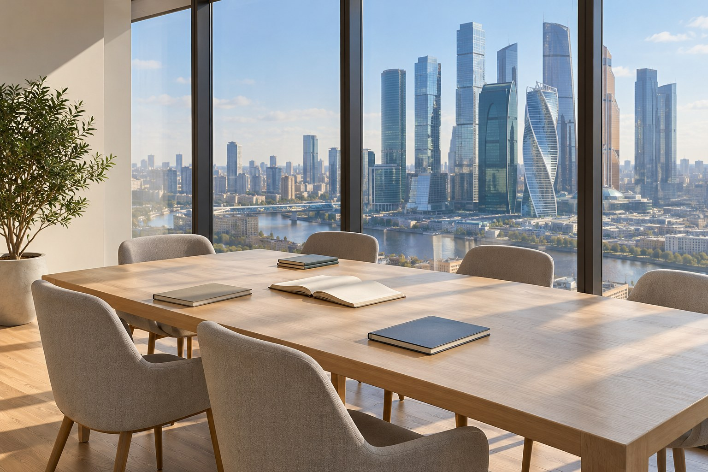

Корейский
для вашей новой главы.
Для жизни, учёбы и общения в Корее. Регулярное погружение в язык в подходящей группе.
Обсудить обучение
Сначала — ваша цель.
Затем — программа.
Планируете поступление, переезд или хотите понимать корейский? Обсудим вашу задачу, текущие знания и готовность к интенсиву.
На знакомстве мы обсудим сроки, ожидания и текущие знания. Подберём группу по возрасту и уровню, познакомим с преподавателем и поможем оценить интенсивный формат.
- Постепенное погружение в язык
- Разговорная практика и понимание речи
- Закрепление материала с преподавателем

Больше языка
в вашей жизни.
Интенсив — это время на настоящую практику. Вы разбираете тему, сразу пробуете её в диалоге и закрепляете в речи.

16 часов живой языковой практики каждую неделю. Достаточно времени, чтобы пройти полный цикл: понять, попробовать, заговорить и закрепить.
- Небольшая группа — до 8 человек
- Подбор по возрасту и уровню
- Работа в парах и живые обсуждения
- 30 минут на перерыв и общение
Разбираем новую тему и её смысл.
Применяем материал в заданиях.
Общаемся в парах и всей группой.
Повторяем, обсуждаем и разбираем ошибки.
Начать с нуля.
Или двигаться дальше.
Занятия выстраиваются от вашей реальной точки старта. Уровень определяем до начала обучения — так группа и материал подходят вашим знаниям.
У начинающих и продолжающих разные задачи. Общий принцип один: новая тема сразу становится практикой в заданиях, парах и живом разговоре.
Содержание и сроки конкретной программы обсуждаем лично.
У вашего дня
есть место для языка.
Выберите утро или вечер. Точные дни занятий и место в группе обсудим при поступлении.

Утро
9:00–13:30Начните день с погружения в язык.
После занятия — время для других планов.
Вечер
17:30–22:00Сохраните привычное утро.
Посвятите вторую половину дня языку.
В каждом окне — 4 часа обучения и 30 минут перерыва. Иллюстрации передают атмосферу занятий.
Понятная цена.
Удобный ритм оплаты.
900 ₽ за час. Без предоплаты за весь курс. Вы выбираете период оплаты — и он закрепляется в договоре.
Посмотреть все расчётыПознакомьтесь
со своим преподавателем.
Индивидуальный онлайн-урок помогает почувствовать подход до начала группового обучения. Преподаватель узнает ваши цели, а вы оцените, насколько комфортно вам учиться вместе.
После знакомства согласуем программу, расписание и выбранный период оплаты. Решение остаётся за вами.
Как проходит пробный урок
Можно ли начать с нуля?
Да. Мы подбираем группу по текущему уровню и возрасту. На знакомстве определим вашу точку старта, обсудим цель и готовность к интенсивному ритму.
За сколько я выучу язык?
Срок зависит от вашей цели, исходного уровня и выбранного языка. После знакомства и диагностики мы предложим конкретную программу. Единого срока для всех нет.
Нужно ли оплачивать весь курс сразу?
Нет. Можно выбрать оплату раз в неделю, раз в две недели или за четыре учебные недели. Выбранный период фиксируется в договоре.
Можно ли сначала познакомиться с преподавателем?
Да. До решения об обучении вы проходите индивидуальный онлайн-урок с преподавателем. Это возможность оценить его подход и собственные ощущения от занятий.
Какой ещё язык вам близок?
У вас есть цель.
У нас — ваш
следующий шаг.
Переезд, поступление, работа или давняя мечта заговорить. Расскажите, что важно именно вам — обсудим цель, сроки и подходящий формат.
Знакомство — первый шаг к вашей программе